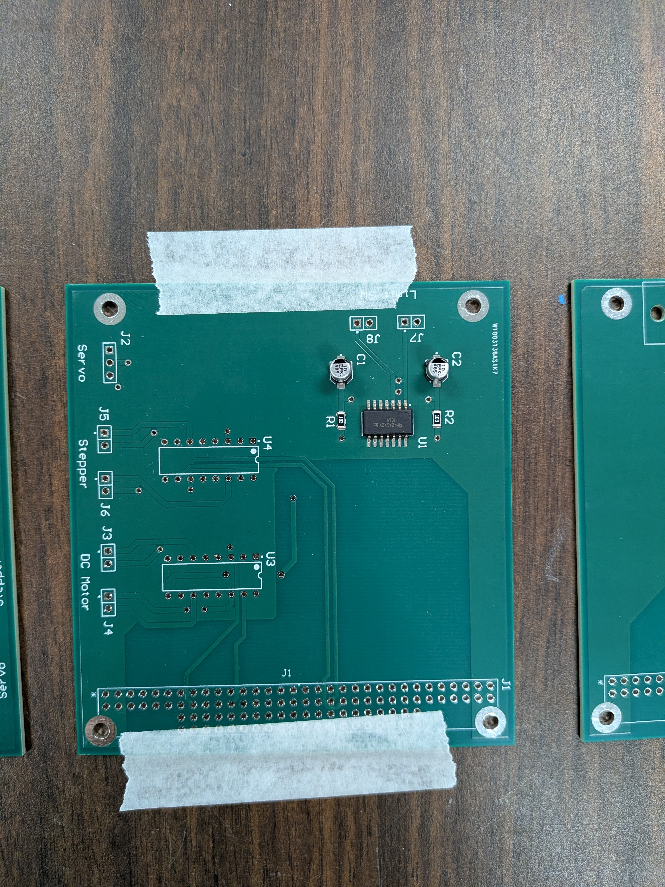

Had to make some changes after production due to a design error...

SMD componenets were soldered using a reflow oven
This project was part of my Second year Engineering Projects course at Conestoga. The purpose behind htis was to design,
from scratch, and industry ready embedded device platform. At it's core, it relies on an STM32 Nucleo Development board, which
contains an ARM Cortex proccessor. The specific guidelines were to integrate with a pre-existing robot chassis, which had dual drive motors and
a dual axis camera controled by a stepper & servo motor.
This project provided some interesting challenges and learning experiences. Not only did we have to integrate with a pre-exisitng platform
that someone else designed, but also had to meet certain form and function requirements, while on a strict 14 week timeline from initial design to manufacturing.
Some key aspects:
The platform had to meet the PC104 formfactor standard which provided great experience working with well known standard and learning to understand technical spec documents.
At a minimum it had to include all the nessacary power supply's, motor driver circuits and communication facilites to support the drive motors, steppers & servos for camera control, and RS232 communication
Modularity was key as future iterations may include more boards for other protocols, and integration with a Raspberry PI for remote control
Not only did we have to complete hardware design, but have a successful control program written that allowed for testing of all the different functions
Key Learnings:
Working with vendors can prove chellenging. Limited part availability along with set timelines for manufacturing meant it was a bit of crunch to deliver on time. This was a great way to apply our project management skills learned in a previous course
More modularity is not always better. My desing had 4 boards which was great for organization but took up a lot more space and added signifigant cost to manufacturing.
Prototyping is important and in future projects, it will be relaly benificial to get the parts first and test for functionality before having to assemble on the final PCB